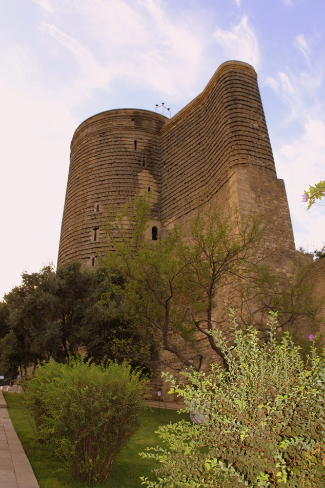

Şehrin Mirası: Kız Kulesi (Qız Qalası)
"Bakü'nün Tarihi Simgesi"

Tarihçe ve Önemi
Kız Kulesi (Azerice: Qız Qalası), Bakü'nün en önemli tarihi sembollerinden biridir. İçerişehir'de yer alan bu eşsiz yapı, Hazar Denizi kıyısında konumlanmıştır.
Tam olarak ne zaman ve hangi amaçla yapıldığı hala bir sır olan kule, 12. yüzyıla tarihlenmekle birlikte temellerinin çok daha eskilere (Zerdüştlük dönemine) dayandığı düşünülmektedir.
Önemli Özellikleri:
- 2000 Yılında UNESCO Dünya Mirası Listesi'ne alınmıştır.
- Yüksekliği 28 metre, duvar kalınlığı ise yer yer 5 metreyi bulur.
- Nevruz bayramlarında şenliklerin merkezi konumundadır.